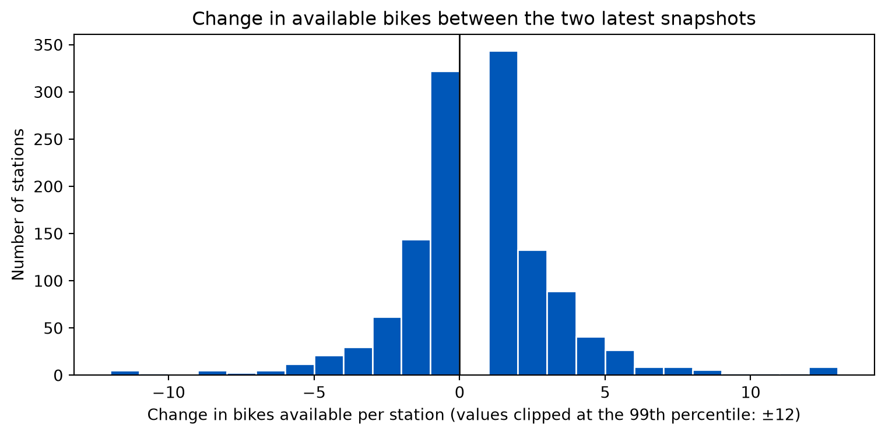
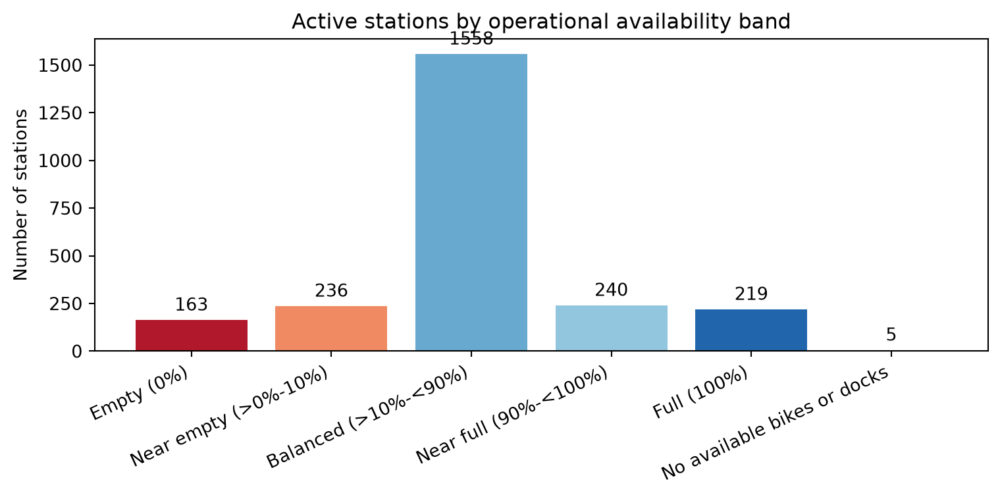
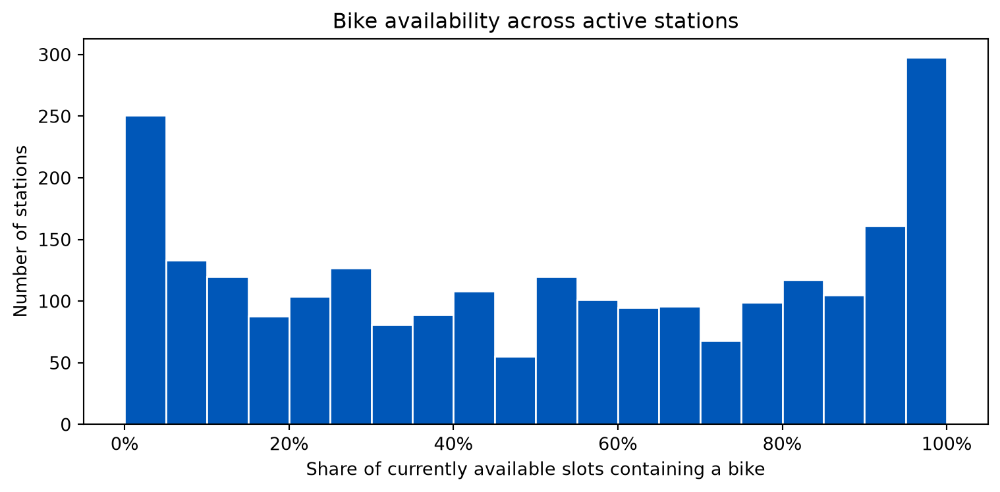
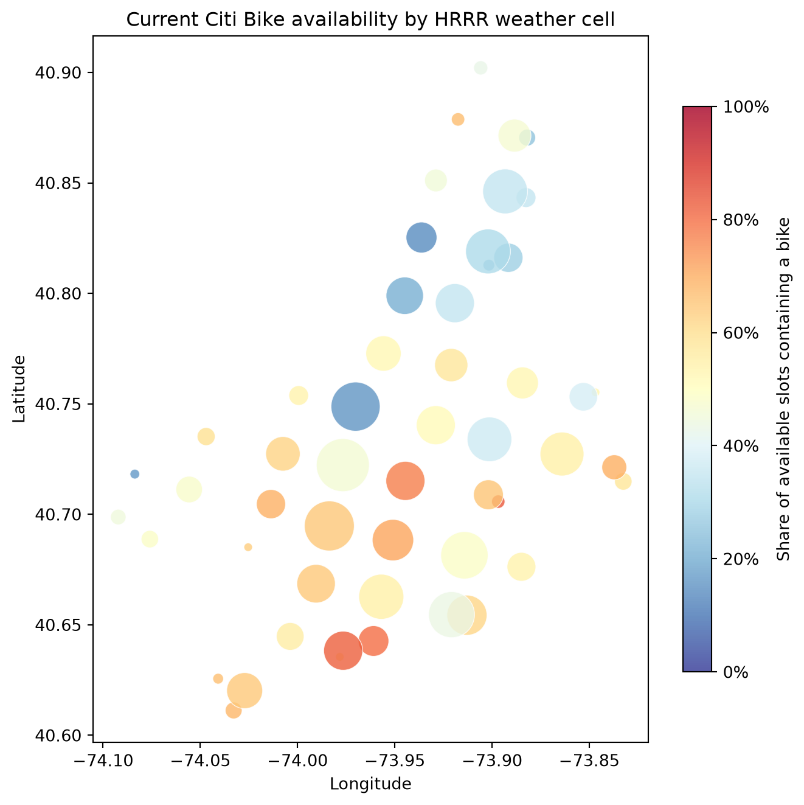

Show code
import pandas as pd
import matplotlib.pyplot as plt
import gzip
import json
from pathlib import PathProject Analysis Template and Preliminary EDA
Citi Bike demand varies across time and location because of commuting patterns, seasonality, system characteristics, and potentially weather. This project will test whether weather conditions improve station-level demand forecasts after accounting for calendar, time, and station information. The effect of weather will be measured rather than assumed.
The primary intended users are Citi Bike operations staff who need to anticipate where bikes or empty docks may be needed. More accurate forecasts could support rebalancing and capacity planning and may indirectly improve availability for riders.
The proposed modeling table will contain one row per station-hour. The primary numeric target is planned to be the number of trip starts at a station during that hour; the team should confirm this definition before modeling. Trip ends or net station flow may be retained as secondary operational outcomes.
| Source | Role in the project | Current status |
|---|---|---|
| Citi Bike trip history and course data | Construct hourly station demand and historical temporal features | Required for modeling; not included in this live-data EDA |
| Citi Bike station information | Station IDs, names, locations, and capacity | Current snapshot archived |
| Citi Bike station status | Bike/dock availability and service flags | Current snapshot archived; repeated history still needed |
| NOAA MRMS precipitation estimates | Proposed historical precipitation source for time-aligned modeling | To acquire and validate |
| Open-Meteo GFS/HRRR | Prototype forecast grid and station-to-weather-cell mapping | Reference mapping created |
The Open-Meteo lookup supplies a spatial join key but does not contain weather measurements. The final historical weather source should be selected based on coverage, reliability, and the ability to align observations to station-hour records. If MRMS and Open-Meteo serve different historical and forecasting roles, that distinction should remain explicit throughout the report.
The project includes one command that retrieves the real, current data used by this EDA. It downloads station_information and station_status from Citi Bike’s official GBFS feed and verifies that every current station coordinate has an HRRR weather-cell mapping. The generated data/ directory is excluded from Git and does not need to be included in the repository; the command creates the full directory hierarchy when run from a clean checkout.
From the DATA 622 directory, run:
python citibike_project/refresh_live_data.pyOr, from inside citibike_project, run:
python refresh_live_data.pyEach execution writes new gzip-compressed GBFS snapshots to UTC-partitioned folders under:
data/raw/station_information/year=YYYY/month=MM/day=DD/
data/raw/station_status/year=YYYY/month=MM/day=DD/The script checks data/raw/weather_forecast/reference/ and reuses the HRRR mapping when all station IDs and coordinates still match. It contacts Open-Meteo and rebuilds the mapping only when it is missing, stations have changed, or --force-weather-map is supplied. A forced rebuild can take several minutes because API requests are deliberately batched and paused:
python citibike_project/refresh_live_data.py --force-weather-mapFor an automated run, record the source revision in each raw archive:
python citibike_project/refresh_live_data.py --git-sha YOUR_COMMIT_SHAInternet access is required. After the command succeeds, render this report to analyze the newest snapshots.
The EDA below uses only current operational data: the latest archived station information and status snapshots plus the station-to-weather-cell reference. It describes a point in time and cannot establish historical demand patterns or the effect of weather on demand. Those questions require the planned station-hour trip and weather history.
The preliminary EDA examines the current station-information and status feeds and validates the station-to-weather-cell lookup. It is an initial live-data pipeline check rather than the final station-hour analysis proposed for modeling.
import pandas as pd
import matplotlib.pyplot as plt
import gzip
import json
from pathlib import PathThe next cells read the newest locally archived information and status files. Station information supplies names, coordinates, and designed capacity; station status supplies current bike and dock availability and service flags.
def read_snapshot(path):
with gzip.open(path, "rt", encoding="utf-8") as file:
return json.load(file)
def read_latest_snapshot(root):
paths = sorted(Path(root).rglob("*.json.gz"))
if not paths:
raise FileNotFoundError(
f"No snapshots found under {root}. Run the station downloaders first."
)
path = paths[-1]
return path, read_snapshot(path)
info_path, info_archive = read_latest_snapshot(
"data/raw/station_information"
)
status_path, status_archive = read_latest_snapshot(
"data/raw/station_status"
)
station_info = pd.DataFrame(info_archive["payload"]["data"]["stations"])
station_status = pd.DataFrame(status_archive["payload"]["data"]["stations"])
snapshot_metadata = pd.DataFrame(
{
"feed": ["station_information", "station_status"],
"file": [info_path.name, status_path.name],
"fetched_at_utc": pd.to_datetime(
[info_archive["fetched_at"], status_archive["fetched_at"]],
utc=True,
),
"records": [len(station_info), len(station_status)],
}
)
snapshot_metadata| feed | file | fetched_at_utc | records | |
|---|---|---|---|---|
| 0 | station_information | info_20261103T012851Z.json.gz | 2026-11-03 01:28:51.146677+00:00 | 2518 |
| 1 | station_status | status_20261103T012851Z.json.gz | 2026-11-03 01:28:51.495948+00:00 | 2518 |
Join the status records to station names and locations, then check how many records matched. A status record without matching station information is retained so that feed changes remain visible.
info_columns = [
column
for column in ["station_id", "name", "lat", "lon", "capacity"]
if column in station_info.columns
]
stations = station_status.merge(
station_info[info_columns],
on="station_id",
how="left",
validate="one_to_one",
)
join_checks = pd.Series(
{
"status_records": len(station_status),
"information_records": len(station_info),
"matched_status_records": stations["name"].notna().sum(),
"unmatched_status_records": stations["name"].isna().sum(),
"duplicate_status_ids": station_status["station_id"].duplicated().sum(),
"duplicate_information_ids": station_info["station_id"].duplicated().sum(),
},
name="count",
).to_frame()
join_checks| count | |
|---|---|
| status_records | 2518 |
| information_records | 2518 |
| matched_status_records | 2518 |
| unmatched_status_records | 0 |
| duplicate_status_ids | 0 |
| duplicate_information_ids | 0 |
An active station must be installed and allow both bike rentals and returns. The checks below also validate inventory fields, station capacity, and the age of each station’s most recent report relative to the archived status snapshot. Timestamps before 2020 or more than five minutes in the future are treated as invalid placeholders rather than extreme reporting delays.
flag_columns = ["is_installed", "is_renting", "is_returning"]
for column in flag_columns:
stations[column] = pd.to_numeric(stations[column], errors="coerce")
inventory_columns = [
"num_bikes_available",
"num_bikes_disabled",
"num_docks_available",
"num_docks_disabled",
]
for column in inventory_columns + ["capacity"]:
stations[column] = pd.to_numeric(stations[column], errors="coerce")
stations["active"] = stations[flag_columns].eq(1).all(axis=1)
stations["service_state"] = stations["active"].map(
{True: "Active", False: "Inactive"}
)
status_snapshot_time = pd.to_datetime(status_archive["fetched_at"], utc=True)
stations["status_reported_at_utc"] = pd.to_datetime(
stations["last_reported"], unit="s", utc=True, errors="coerce"
)
stations["status_age_minutes"] = (
status_snapshot_time - stations["status_reported_at_utc"]
).dt.total_seconds() / 60
stations["valid_status_timestamp"] = (
stations["status_reported_at_utc"]
.ge(pd.Timestamp("2020-01-01", tz="UTC"))
.fillna(False)
& stations["status_age_minutes"].ge(-5).fillna(False)
)
stations["valid_status_age_minutes"] = stations["status_age_minutes"].where(
stations["valid_status_timestamp"]
)
stations["accounted_inventory"] = stations[inventory_columns].sum(
axis=1, min_count=len(inventory_columns)
)
stations["capacity_gap"] = (
stations["accounted_inventory"] - stations["capacity"]
)
required_columns = [
"station_id",
"name",
"lat",
"lon",
"capacity",
"last_reported",
] + flag_columns + inventory_columns
data_quality_checks = pd.Series(
{
"records with a missing required value": (
stations[required_columns].isna().any(axis=1).sum()
),
"records with a negative inventory count": (
stations[inventory_columns].lt(0).any(axis=1).sum()
),
"invalid or placeholder status timestamps": (
(~stations["valid_status_timestamp"]).sum()
),
"valid reports more than 10 minutes old": (
stations["valid_status_timestamp"]
& stations["status_age_minutes"].gt(10)
).sum(),
"valid reports more than 60 minutes old": (
stations["valid_status_timestamp"]
& stations["status_age_minutes"].gt(60)
).sum(),
"active stations with capacity difference": (
stations["active"] & stations["capacity_gap"].ne(0)
).sum(),
"active stations with capacity difference over 2": (
stations["active"] & stations["capacity_gap"].abs().gt(2)
).sum(),
},
name="station_count",
).to_frame()
data_quality_checks| station_count | |
|---|---|
| records with a missing required value | 0 |
| records with a negative inventory count | 0 |
| invalid or placeholder status timestamps | 50 |
| valid reports more than 10 minutes old | 39 |
| valid reports more than 60 minutes old | 39 |
| active stations with capacity difference | 834 |
| active stations with capacity difference over 2 | 77 |
Freshness is summarized separately for active and inactive stations so that placeholder timestamps from stations out of service do not distort the active network. Ages below are calculated only from valid timestamps.
freshness_by_service = (
stations.groupby("service_state", sort=False)
.agg(
stations=("station_id", "size"),
valid_timestamps=("valid_status_timestamp", "sum"),
invalid_timestamps=(
"valid_status_timestamp",
lambda values: (~values).sum(),
),
median_age_minutes=("valid_status_age_minutes", "median"),
p95_age_minutes=(
"valid_status_age_minutes",
lambda values: values.quantile(0.95),
),
maximum_age_minutes=("valid_status_age_minutes", "max"),
)
.round(1)
)
freshness_by_service| stations | valid_timestamps | invalid_timestamps | median_age_minutes | p95_age_minutes | maximum_age_minutes | |
|---|---|---|---|---|---|---|
| service_state | ||||||
| Inactive | 97 | 47 | 50 | 992.5 | 6559.7 | 157569.4 |
| Active | 2421 | 2421 | 0 | 1.8 | 3.0 | 8.1 |
A difference between designed capacity and accounted inventory is a diagnostic flag, not automatically a feed error: temporary station configurations and out-of-service equipment can also create differences. The largest active differences are shown for review.
capacity_differences = (
stations.loc[
stations["active"] & stations["capacity_gap"].ne(0),
[
"name",
"capacity",
"accounted_inventory",
"capacity_gap",
"num_bikes_disabled",
"num_docks_disabled",
],
]
.assign(absolute_gap=lambda frame: frame["capacity_gap"].abs())
.nlargest(10, "absolute_gap")
.drop(columns="absolute_gap")
)
capacity_differences| name | capacity | accounted_inventory | capacity_gap | num_bikes_disabled | num_docks_disabled | |
|---|---|---|---|---|---|---|
| 1834 | Icahn Stadium Plaza | 4 | 18 | 14 | 17 | 0 |
| 2260 | Washington St & Laight St | 63 | 77 | 14 | 6 | 40 |
| 786 | Southern Blvd & E 187 St | 23 | 14 | -9 | 1 | 0 |
| 1283 | Greenwich St & Hubert St | 35 | 43 | 8 | 4 | 38 |
| 589 | Central Park S & 6 Ave | 73 | 66 | -7 | 3 | 0 |
| 829 | Catherine St & Monroe St | 35 | 28 | -7 | 4 | 0 |
| 33 | Pacific St & Sackman St | 19 | 13 | -6 | 6 | 0 |
| 112 | 112 St & Northern Blvd | 20 | 14 | -6 | 1 | 0 |
| 283 | Lexington Ave & E 127 St | 33 | 27 | -6 | 10 | 0 |
| 681 | 1 Ave & E 6 St | 94 | 88 | -6 | 4 | 0 |
When at least two status archives exist, the next comparison measures how availability changed between the two newest observations. These changes are a pipeline and system-activity check; they are not trip demand because they can combine rentals, returns, rebalancing, maintenance, and feed corrections.
status_paths = sorted(Path("data/raw/station_status").rglob("*.json.gz"))
if len(status_paths) >= 2:
previous_status_path, current_status_path = status_paths[-2:]
previous_status_archive = read_snapshot(previous_status_path)
current_status_archive = read_snapshot(current_status_path)
previous_status = pd.DataFrame(
previous_status_archive["payload"]["data"]["stations"]
)
current_status = pd.DataFrame(
current_status_archive["payload"]["data"]["stations"]
)
station_changes = previous_status[
["station_id", "num_bikes_available", "num_docks_available"]
].merge(
current_status[
["station_id", "num_bikes_available", "num_docks_available"]
],
on="station_id",
how="outer",
suffixes=("_previous", "_current"),
indicator=True,
validate="one_to_one",
)
station_changes = station_changes.merge(
station_info[["station_id", "name"]],
on="station_id",
how="left",
validate="one_to_one",
)
matched_changes = station_changes.loc[
station_changes["_merge"].eq("both")
].copy()
matched_changes["bike_change"] = (
matched_changes["num_bikes_available_current"]
- matched_changes["num_bikes_available_previous"]
)
matched_changes["dock_change"] = (
matched_changes["num_docks_available_current"]
- matched_changes["num_docks_available_previous"]
)
previous_time = pd.to_datetime(
previous_status_archive["fetched_at"], utc=True
)
current_time = pd.to_datetime(
current_status_archive["fetched_at"], utc=True
)
elapsed_minutes = (current_time - previous_time).total_seconds() / 60
snapshot_change_summary = pd.Series(
{
"previous snapshot (UTC)": previous_time,
"current snapshot (UTC)": current_time,
"elapsed minutes": round(elapsed_minutes, 1),
"stations in both snapshots": len(matched_changes),
"stations added": station_changes["_merge"].eq("right_only").sum(),
"stations removed": station_changes["_merge"].eq("left_only").sum(),
"stations with a bike-count change": (
matched_changes["bike_change"].ne(0).sum()
),
"sum of absolute bike-count changes": (
matched_changes["bike_change"].abs().sum()
),
"net change in available bikes": matched_changes["bike_change"].sum(),
},
name="value",
).to_frame()
else:
matched_changes = pd.DataFrame()
snapshot_change_summary = pd.DataFrame(
{"value": ["At least two status snapshots are required."]},
index=["snapshot comparison"],
)
snapshot_change_summary| value | |
|---|---|
| previous snapshot (UTC) | 2026-11-03 00:59:21.060141+00:00 |
| current snapshot (UTC) | 2026-11-03 01:28:51.495948+00:00 |
| elapsed minutes | 29.5 |
| stations in both snapshots | 2518 |
| stations added | 0 |
| stations removed | 0 |
| stations with a bike-count change | 1284 |
| sum of absolute bike-count changes | 2846 |
| net change in available bikes | 256 |
if not matched_changes.empty:
changed_bikes = matched_changes.loc[
matched_changes["bike_change"].ne(0), "bike_change"
]
limit = max(1, int(changed_bikes.abs().quantile(0.99)))
fig, ax = plt.subplots(figsize=(8, 4))
ax.hist(
changed_bikes.clip(-limit, limit),
bins=range(-limit, limit + 2),
color="#0057B8",
edgecolor="white",
)
ax.axvline(0, color="black", linewidth=1)
ax.set(
title="Change in available bikes between the two latest snapshots",
xlabel=(
"Change in bikes available per station "
f"(values clipped at the 99th percentile: ±{limit})"
),
ylabel="Number of stations",
)
fig.tight_layout()
plt.show()
The stations with the largest absolute changes provide a quick check that the aggregate result is not driven by a single record.
if not matched_changes.empty:
largest_changes = (
matched_changes.assign(
absolute_bike_change=lambda frame: frame["bike_change"].abs()
)
.nlargest(10, "absolute_bike_change")
[
[
"name",
"num_bikes_available_previous",
"num_bikes_available_current",
"bike_change",
"dock_change",
]
]
)
else:
largest_changes = pd.DataFrame()
largest_changes| name | num_bikes_available_previous | num_bikes_available_current | bike_change | dock_change | |
|---|---|---|---|---|---|
| 1334 | Greenwich St & W Houston St | 49 | 74 | 25 | -25 |
| 316 | 56 Ave & 92 St | 0 | 24 | 24 | 1 |
| 2188 | W Broadway & Spring St | 64 | 41 | -23 | 23 |
| 2506 | Crescent St & 30 Ave | 0 | 18 | 18 | -17 |
| 1415 | W 20 St & 8 Ave | 41 | 58 | 17 | -8 |
| 487 | Pier 61 at Chelsea Piers | 19 | 4 | -15 | 14 |
| 942 | W 44 St & 11 Ave | 48 | 62 | 14 | -13 |
| 1766 | W 52 St & 6 Ave | 0 | 14 | 14 | -15 |
| 146 | W 27 St & 6 Ave | 22 | 9 | -13 | 12 |
| 1299 | E 2 St & Ave B | 39 | 52 | 13 | -13 |
Bike share is calculated from currently available bikes and docks; it is not a historical utilization rate. In addition to exact stockouts, the summary uses 10% and 90% thresholds to identify stations approaching an operational constraint. E-bike share is calculated among all currently available bikes.
stations["available_slots"] = (
stations["num_bikes_available"] + stations["num_docks_available"]
)
stations["bike_share"] = (
stations["num_bikes_available"]
.div(stations["available_slots"].where(stations["available_slots"].gt(0)))
)
active = stations.loc[stations["active"]].copy()
ebikes_available = (
active["num_ebikes_available"].sum()
if "num_ebikes_available" in active.columns
else pd.NA
)
ebike_share = (
ebikes_available / active["num_bikes_available"].sum()
if pd.notna(ebikes_available) and active["num_bikes_available"].sum() > 0
else pd.NA
)
network_summary = pd.Series(
{
"stations_reporting": len(stations),
"active_stations": len(active),
"bikes_available": active["num_bikes_available"].sum(),
"e-bikes_available": ebikes_available,
"e-bike_share_of_available_bikes": ebike_share,
"docks_available": active["num_docks_available"].sum(),
"stations_with_no_bikes": active["num_bikes_available"].eq(0).sum(),
"stations_at_or_below_10%_bike_share": active["bike_share"].le(0.10).sum(),
"stations_with_no_docks": active["num_docks_available"].eq(0).sum(),
"stations_at_or_above_90%_bike_share": active["bike_share"].ge(0.90).sum(),
"disabled_bikes": active["num_bikes_disabled"].sum(),
"disabled_docks": active["num_docks_disabled"].sum(),
"median_bike_share": active["bike_share"].median(),
},
name="value",
).to_frame()
percentage_metrics = {
"e-bike_share_of_available_bikes",
"median_bike_share",
}
network_summary_display = network_summary.copy()
network_summary_display["value"] = [
f"{value:.1%}" if metric in percentage_metrics else f"{value:,.0f}"
for metric, value in network_summary["value"].items()
]
network_summary_display| value | |
|---|---|
| stations_reporting | 2,518 |
| active_stations | 2,421 |
| bikes_available | 30,716 |
| e-bikes_available | 12,155 |
| e-bike_share_of_available_bikes | 39.6% |
| docks_available | 31,214 |
| stations_with_no_bikes | 168 |
| stations_at_or_below_10%_bike_share | 399 |
| stations_with_no_docks | 224 |
| stations_at_or_above_90%_bike_share | 459 |
| disabled_bikes | 9,384 |
| disabled_docks | 382 |
| median_bike_share | 51.1% |
Group stations into operational availability bands. Exact empty and full stations are separated from those that are close to those limits.
active["availability_band"] = "Balanced (>10%-<90%)"
active.loc[
active["bike_share"].gt(0) & active["bike_share"].le(0.10),
"availability_band",
] = "Near empty (>0%-10%)"
active.loc[active["bike_share"].eq(0), "availability_band"] = "Empty (0%)"
active.loc[
active["bike_share"].ge(0.90) & active["bike_share"].lt(1),
"availability_band",
] = "Near full (90%-<100%)"
active.loc[active["bike_share"].eq(1), "availability_band"] = "Full (100%)"
active.loc[
active["bike_share"].isna(), "availability_band"
] = "No available bikes or docks"
availability_order = [
"Empty (0%)",
"Near empty (>0%-10%)",
"Balanced (>10%-<90%)",
"Near full (90%-<100%)",
"Full (100%)",
"No available bikes or docks",
]
availability_counts = (
active["availability_band"]
.value_counts()
.reindex(availability_order, fill_value=0)
)
fig, ax = plt.subplots(figsize=(8, 4))
bars = ax.bar(
availability_counts.index,
availability_counts.values,
color=["#B2182B", "#EF8A62", "#67A9CF", "#92C5DE", "#2166AC", "#777777"],
)
ax.bar_label(bars, padding=3, fmt="%.0f")
ax.set(
title="Active stations by operational availability band",
xlabel="",
ylabel="Number of stations",
)
ax.tick_params(axis="x", rotation=25)
for label in ax.get_xticklabels():
label.set_horizontalalignment("right")
fig.tight_layout()
plt.show()
The distribution below shows whether active stations were relatively empty, balanced, or relatively full when the status snapshot was collected.
fig, ax = plt.subplots(figsize=(8, 4))
ax.hist(
active["bike_share"].dropna(),
bins=20,
color="#0057B8",
edgecolor="white",
)
ax.set(
title="Bike availability across active stations",
xlabel="Share of currently available slots containing a bike",
ylabel="Number of stations",
)
ax.xaxis.set_major_formatter(lambda value, position: f"{value:.0%}")
fig.tight_layout()
plt.show()
To avoid ranking large stations highly simply because of their capacity, the table below prioritizes the largest stations already near an empty or full constraint and reports both raw counts and capacity-normalized bike share.
near_empty = (
active.loc[active["bike_share"].le(0.10)]
.nlargest(10, "available_slots")
.assign(operational_risk="At or below 10% bike share")
)
near_full = (
active.loc[active["bike_share"].ge(0.90)]
.nlargest(10, "available_slots")
.assign(operational_risk="At or above 90% bike share")
)
operational_extremes = pd.concat([near_empty, near_full], ignore_index=True)[
[
"operational_risk",
"name",
"num_bikes_available",
"num_docks_available",
"available_slots",
"bike_share",
]
]
operational_extremes.style.format(
{
"bike_share": "{:.1%}",
}
)| operational_risk | name | num_bikes_available | num_docks_available | available_slots | bike_share | |
|---|---|---|---|---|---|---|
| 0 | At or below 10% bike share | E 40 St & Park Ave | 0 | 114 | 114 | 0.0% |
| 1 | At or below 10% bike share | Park Ave & E 41 St | 0 | 99 | 99 | 0.0% |
| 2 | At or below 10% bike share | Broadway & E 14 St | 3 | 95 | 98 | 3.1% |
| 3 | At or below 10% bike share | Broadway & W 48 St | 0 | 96 | 96 | 0.0% |
| 4 | At or below 10% bike share | 9 Ave & W 33 St | 5 | 86 | 91 | 5.5% |
| 5 | At or below 10% bike share | E 11 St & Broadway | 3 | 88 | 91 | 3.3% |
| 6 | At or below 10% bike share | Broadway & W 29 St | 9 | 81 | 90 | 10.0% |
| 7 | At or below 10% bike share | E 40 St & 5 Ave | 3 | 86 | 89 | 3.4% |
| 8 | At or below 10% bike share | 1 Ave & E 44 St | 2 | 85 | 87 | 2.3% |
| 9 | At or below 10% bike share | Broadway & E 19 St | 5 | 80 | 85 | 5.9% |
| 10 | At or above 90% bike share | W 41 St & 8 Ave | 87 | 3 | 90 | 96.7% |
| 11 | At or above 90% bike share | Riverside Blvd & W 67 St | 78 | 0 | 78 | 100.0% |
| 12 | At or above 90% bike share | E 2 St & 2 Ave | 73 | 4 | 77 | 94.8% |
| 13 | At or above 90% bike share | 7 Ave S & Bleecker St | 74 | 2 | 76 | 97.4% |
| 14 | At or above 90% bike share | Greenwich St & W Houston St | 74 | 0 | 74 | 100.0% |
| 15 | At or above 90% bike share | Water St & Fletcher St | 67 | 7 | 74 | 90.5% |
| 16 | At or above 90% bike share | 3 St & 3 Ave | 67 | 6 | 73 | 91.8% |
| 17 | At or above 90% bike share | West Thames St | 72 | 0 | 72 | 100.0% |
| 18 | At or above 90% bike share | Kent Ave & N 7 St | 72 | 0 | 72 | 100.0% |
| 19 | At or above 90% bike share | Greenwich St & Christopher St | 70 | 0 | 70 | 100.0% |
The weather reference files assign every station coordinate to an HRRR grid cell. First, check the configuration and whether the lookup covers the current station-information and station-status records.
weather_reference_directory = Path(
"data/raw/weather_forecast/reference"
)
weather_lookup = pd.read_csv(
weather_reference_directory / "station_weather_lookup.csv",
dtype={"station_id": "string"},
)
with open(
weather_reference_directory / "hrrr_locations.json",
encoding="utf-8",
) as file:
weather_configuration = json.load(file)
weather_locations = pd.DataFrame(weather_configuration["locations"])
station_weather = stations.merge(
weather_lookup[["station_id", "location_id"]],
on="station_id",
how="left",
validate="one_to_one",
)
weather_coverage = pd.Series(
{
"weather_model": weather_configuration["model"],
"weather_cells": weather_lookup["location_id"].nunique(),
"stations_in_lookup": weather_lookup["station_id"].nunique(),
"status_stations_with_weather_cell": (
station_weather["location_id"].notna().sum()
),
"status_stations_without_weather_cell": (
station_weather["location_id"].isna().sum()
),
"median_stations_per_weather_cell": (
weather_lookup.groupby("location_id")["station_id"].nunique().median()
),
},
name="value",
).to_frame()
weather_coverage| value | |
|---|---|
| weather_model | gfs_hrrr |
| weather_cells | 52 |
| stations_in_lookup | 2518 |
| status_stations_with_weather_cell | 2518 |
| status_stations_without_weather_cell | 0 |
| median_stations_per_weather_cell | 42.5 |
Aggregate current bike and dock availability to the same weather-cell level. This is the structure a later forecast model can use to join one weather row to multiple nearby Citi Bike stations.
active_station_weather = station_weather.loc[
station_weather["active"] & station_weather["location_id"].notna()
].copy()
weather_cell_status = (
active_station_weather.groupby("location_id", as_index=False)
.agg(
station_count=("station_id", "nunique"),
bikes_available=("num_bikes_available", "sum"),
docks_available=("num_docks_available", "sum"),
)
)
weather_cell_status["bike_share"] = (
weather_cell_status["bikes_available"]
/ (
weather_cell_status["bikes_available"]
+ weather_cell_status["docks_available"]
).where(
(
weather_cell_status["bikes_available"]
+ weather_cell_status["docks_available"]
).gt(0)
)
)
weather_cell_status.describe().T| count | mean | std | min | 25% | 50% | 75% | max | |
|---|---|---|---|---|---|---|---|---|
| station_count | 52.0 | 46.557692 | 35.871455 | 1.000000 | 12.000000 | 41.000000 | 70.000000 | 131.000000 |
| bikes_available | 52.0 | 590.692308 | 701.461347 | 5.000000 | 104.250000 | 414.500000 | 885.000000 | 3392.000000 |
| docks_available | 52.0 | 600.269231 | 861.499175 | 8.000000 | 99.000000 | 378.500000 | 798.000000 | 4739.000000 |
| bike_share | 52.0 | 0.512588 | 0.172977 | 0.140732 | 0.416232 | 0.533195 | 0.645023 | 0.834646 |
The map below summarizes current availability at weather-cell resolution. Point size represents the number of active Citi Bike stations assigned to a cell, and color represents the share of available slots containing a bike. The plotted coordinates are representative API request locations from the reference file, not exact HRRR cell centroids.
weather_cell_map = weather_locations.merge(
weather_cell_status,
on="location_id",
how="inner",
validate="one_to_one",
)
fig, ax = plt.subplots(figsize=(7, 7))
points = ax.scatter(
weather_cell_map["longitude"],
weather_cell_map["latitude"],
s=20 + 8 * weather_cell_map["station_count"],
c=weather_cell_map["bike_share"],
cmap="RdYlBu_r",
vmin=0,
vmax=1,
alpha=0.8,
edgecolor="white",
linewidth=0.5,
)
colorbar = fig.colorbar(points, ax=ax, shrink=0.8)
colorbar.set_label("Share of available slots containing a bike")
colorbar.ax.yaxis.set_major_formatter(
lambda value, position: f"{value:.0%}"
)
ax.set(
title="Current Citi Bike availability by HRRR weather cell",
xlabel="Longitude",
ylabel="Latitude",
)
fig.tight_layout()
plt.show()
The live data are sufficient to verify ingestion, station joins, status metrics, and weather-cell coverage and to describe current bike availability. They are not sufficient to answer the project’s central prediction question because the status data contain only a point-in-time snapshot and the weather reference contains locations rather than historical weather values.
Document the final target precisely before fitting models.
America/New_York, including daylight-saving transitions.| Feature group | Candidate variables | Notes |
|---|---|---|
| Calendar | Hour, day of week, weekend, month, season, holiday | Encode cyclical hour/month effects where appropriate |
| Station | Station ID, capacity, latitude/longitude, region | Use only attributes valid at the prediction time |
| Demand history | Previous hour/day/week demand, rolling averages | Lag all values to prevent target leakage |
| System state | Bikes and docks available | Use only if a real forecast would have the value at scoring time |
Candidate variables include hourly precipitation, precipitation intensity, temperature, apparent temperature, wind, and severe-weather indicators. Interactions with hour of day or season may be useful, but should be justified and evaluated on held-out periods. Record the weather source, spatial cell, observation or forecast timestamp, units, missingness, and any imputation for every variable.
Before training, report:
Fit a reproducible baseline using calendar, time, station, and approved lagged demand features without external weather variables. A simple seasonal or historical-average benchmark should be included so that more complex models must demonstrate practical improvement.
Fit a comparable model using the same rows, split, preprocessing, and baseline features, then add the weather variables. Keeping all other conditions fixed isolates the incremental predictive value of weather.
The proposal identifies linear regression, decision trees, and random forests as initial candidates. Start with interpretable specifications, then add model complexity only when chronological validation shows a meaningful benefit.
# Modeling skeleton to complete after the station-hour table is available.
target = "trip_starts"
baseline_features = [
# calendar, station, and leakage-safe lag features
]
weather_features = [
# precipitation, temperature, wind, and approved interactions
]
# 1. Sort by observation time.
# 2. Create chronological training, validation, and test periods.
# 3. Fit the baseline model on baseline_features.
# 4. Fit the weather model on baseline_features + weather_features.
# 5. Evaluate both models on the identical held-out observations.Preserve time order rather than relying on a random row split. Document the exact training, validation, and test boundaries and ensure that feature engineering is refit within each training period. Where practical, use rolling-origin evaluation to determine whether conclusions are stable across seasons.
Use MAE as an easily interpreted average error and RMSE to place more weight on large misses. Report performance at both the overall and station levels, and compare high-, medium-, and low-demand periods.
| Model | Feature set | Test period | MAE | RMSE | Change from baseline |
|---|---|---|---|---|---|
| Seasonal benchmark | Historical pattern | To complete | — | — | — |
| Baseline model | Time + station + approved lags | To complete | — | — | — |
| Weather-enhanced model | Baseline + weather | To complete | — | — | — |
Complete the following after generating held-out predictions:
Evaluate monthly retraining with a rolling 12-month window. This gives each fit a full seasonal cycle while allowing the model to adapt to newer commuting patterns and system expansion. A production design should also monitor input coverage, feature drift, prediction error, and station-network changes between scheduled retraining runs.
From the DATA 622 directory, refresh the local reference inputs with:
python citibike_project/refresh_live_data.pyThen render this report from citibike_project:
quarto render citibike_demand_project_proposal.qmdArchived feed timestamps, poller versions, and Git SHAs should remain with all raw snapshots so results can be traced to the data and code that produced them.